import sklearnLecture 10 - Scikit-Learn Library for Data Science


- 10.1 Introduction to Scikit-Learn
- 10.2 Supervised Learning: Classification
- 10.3 Supervised Learning: Regression
- 10.4 Unsupervised Learning: Clustering
- 10.5 Hyperparameter Tuning
- 10.6 Cross-Validation
- 10.7 Performance Metrics
- 10.8 Model Pipelines
- 10.9 Flow Chart: How to Choose an Estimator
- Appendix: Optical Character Recognition
- References
10.1 Introduction to Scikit-Learn
Scikit-Learn is a Python library designed to provide access to machine learning algorithms within Python code, through a clean and well-designed API. It has been built by hundreds of contributors from around the world, and is used in industry and academia.
Scikit-Learn is built upon Python’s NumPy (Numerical Python) and SciPy (Scientific Python) libraries, which enable efficient numerical and scientific computation within Python.
Scikit-Learn is imported via the sklearn module.
10.1.1 Representation of Data in Scikit-Learn
Most machine learning algorithms implemented in scikit-learn expect the training data to be stored in a two-dimensional array (matrix). The size of the array is expected to be [n_samples, n_features].
- n_samples is the number of samples (also referred to as inputs, data points, instances, examples), where each sample is an item to process (e.g., classify). A sample can be a row in database or CSV file, an image, a video, a document, an astronomical object, or anything that we can describe with a set of quantitative features.
- n_features is the number of features or distinct characteristics that can be used to describe each sample in a quantitative manner. Features are generally real-valued numbers, but they can also be boolean or discrete values.
10.1.2 A Dataset Example: Iris Dataset
As an example of a simple dataset, we are going to look at the Iris dataset stored by the scikit-learn library.
The data consists of measurements of three different species of irises:
- Iris Setosa
- Iris Versicolour
- Iris Virginica
Each sample has 4 features, which include:
- Sepal length in cm
- Sepal width in cm
- Petal length in cm
- Petal width in cm
All four features are measured in centimeters (cm). Note that the data are not images of iris flowers, but 4 measurements for each flower.
Examples of images from the three iris species are shown below.
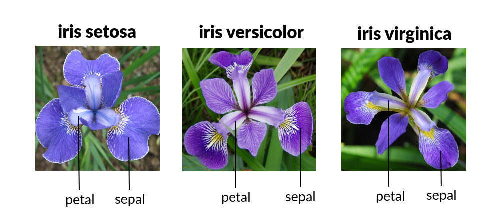
There are 50 samples for each species, therefore there are 150 samples in total for all 3 species.
Scikit-learn provides a helper function load_iris to load the dataset into a dictionary with numpy arrays as values.
from sklearn.datasets import load_iris
iris = load_iris()Let’s explore the keys in the loaded dictionary. The main elements are the data and the target keys.
iris.keys()dict_keys(['data', 'target', 'frame', 'target_names', 'DESCR', 'feature_names', 'filename', 'data_module'])# 150 samples, 4 features
iris.data.shape(150, 4)# Show the features for the first sample
iris.data[0]array([5.1, 3.5, 1.4, 0.2])# 'Target' is the array of class labels for each sample
iris.target.shape(150,)print(iris.target)
# 0 is Iris Setosa, 1 is Iris Versicolor, 2 is Iris Virginica[0 0 0 0 0 0 0 0 0 0 0 0 0 0 0 0 0 0 0 0 0 0 0 0 0 0 0 0 0 0 0 0 0 0 0 0 0
0 0 0 0 0 0 0 0 0 0 0 0 0 1 1 1 1 1 1 1 1 1 1 1 1 1 1 1 1 1 1 1 1 1 1 1 1
1 1 1 1 1 1 1 1 1 1 1 1 1 1 1 1 1 1 1 1 1 1 1 1 1 1 2 2 2 2 2 2 2 2 2 2 2
2 2 2 2 2 2 2 2 2 2 2 2 2 2 2 2 2 2 2 2 2 2 2 2 2 2 2 2 2 2 2 2 2 2 2 2 2
2 2]print(iris.target_names)['setosa' 'versicolor' 'virginica']print(iris.feature_names)['sepal length (cm)', 'sepal width (cm)', 'petal length (cm)', 'petal width (cm)']Although the dataset is four-dimensional, we can visualize two of the dimensions at a time using a scatter plot.
import numpy as np
import matplotlib.pyplot as plt
import warnings
warnings.filterwarnings('ignore')
x_index = 0 # sepal_length
y_index = 1 # sepal_width
# this formatter will label the colorbar with the correct target names
formatter = plt.FuncFormatter(lambda i, *args: iris.target_names[int(i)])
plt.scatter(iris.data[:, x_index], iris.data[:, y_index],
c=iris.target, cmap=plt.cm.get_cmap('viridis_r', 3))
plt.colorbar(ticks=[0, 1, 2], format=formatter)
plt.clim(-0.5, 2.5)
plt.xlabel(iris.feature_names[x_index])
plt.ylabel(iris.feature_names[y_index]);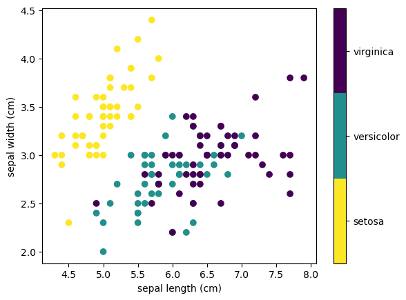
10.1.3 Other Available Data in Scikit-Learn
Besides the Iris dataset, scikit-learn provides other datasets, that can be loaded directly from scikit-learn. The datasets include:
- Packaged Data: several small datasets are packaged with the scikit-learn installation, and can be downloaded using the tools in
sklearn.datasets.load_* - Downloadable Data: several larger datasets are available for download, and scikit-learn includes tools that streamline this process. These tools can be found in
sklearn.datasets.fetch_* - Generated Data: several datasets can be generated using various random sample generators. These are available in
sklearn.datasets.make_*
from sklearn import datasetsTo see the available datasets in scikit-learn use the following:
# Type datasets.load_<TAB> to see all available datasets
datasets.load_
# Type datasets.fetch_<TAB> to see all available datasets
datasets.fetch_
# Type datasets.make_<TAB> to see all available datasets
datasets.make_10.2 Supervised Learning: Classification
In supervised learning, an algorithm processes a dataset consisting of samples (training data) and labels. Supervised learning is further broken down into two main categories: classification and regression. In classification, the label is discrete such as the class membership, while in regression the label is continuous. We will first look at examples of performing classification with scikit-learn, and afterwards we will study regression tasks.
The implementations of machine learning algorithms and models in scikit-learn are called estimators or estimator objects. Each estimator can be fitted to input data using the fit() method in scikit-learn. Fitting an estimator to data is equivalent to training a model, that is, the parameters of the model are learned from the data.
10.2.1 k-Nearest Neighbors (kNN)
We will illustrate classification first with the k-nearest neighbors (kNN) algorithm. This algorithm uses a very simple learning strategy: to predict the target class of a new sample, it takes into account its k closest samples in the training set and predicts the class labels based on majority voting of these samples.
For instance, if k=1, to assign a class label to the test example shown with the white square in the figure below, the kNN classifier will first calculate the distance to each data point in the training set, and afterward, it will assign the class of the nearest data point to the test example.
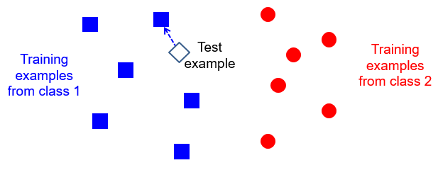
Or, if k=3, then the 3 nearest neighbors will be considered to classify a test data point. For the test data points shown with the + marker in the figure below, the class is obtained by voting based on the class labels of the 3 closest data points.
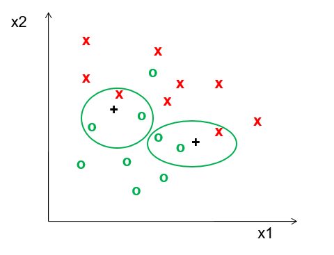
kNN is a simple classification algorithm, and one main disadvantage is that the classifier needs to remember all of the training data and store it for future comparisons with test samples. This can be space inefficient when working with large datasets having many data points, and it can be computationally expensive since it requires calculating the distance to all data points.
Let’s try kNN on the iris classification problem. In the following cell, we passed the newly created classifier object to the name knn and we chose to use 5 nearest neighbors.
from sklearn import neighbors
# create the model
knn = neighbors.KNeighborsClassifier(n_neighbors=5)The full set of arguments that can be passed to kNN in scikit-learn is shown below, and more information about the arguments can be found at this link.
class sklearn.neighbors.KNeighborsClassifier(n_neighbors=5, *, weights='uniform',
algorithm='auto', leaf_size=30, p=2, metric='minkowski', metric_params=None, n_jobs=None)Train the Model
# define X and y variables for data and targets
X, y = iris.data, iris.target# fit the model with model.fit(training data, training target)
knn.fit(X, y)KNeighborsClassifier()In a Jupyter environment, please rerun this cell to show the HTML representation or trust the notebook.
On GitHub, the HTML representation is unable to render, please try loading this page with nbviewer.org.
Parameters
| n_neighbors | 5 | |
| weights | 'uniform' | |
| algorithm | 'auto' | |
| leaf_size | 30 | |
| p | 2 | |
| metric | 'minkowski' | |
| metric_params | None | |
| n_jobs | None |
The model training is depicted in the following diagram. The model is fit to the training data/samples/instances (often denoted X) and training target/label/class/category (often denoted y). The method fit uses the specified learning algorithm for estimating the parameters of the model. The learned parameters constitute the model state that can later be used to make predictions (to classify test data).
Note again the syntax for training/fitting a model: model.fit(data, target)
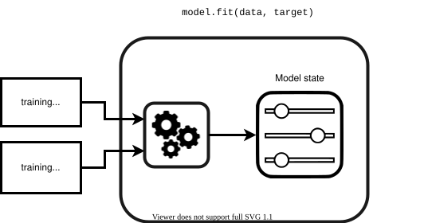
Figure source: Reference [5].Make Predictions
Next, we will use our trained model to make predictions on the same dataset X that we used for training. To predict, the model uses the input data together with the model state to output a target/label for each data point.
Note the syntax for predicting with a model: model.predict(data)
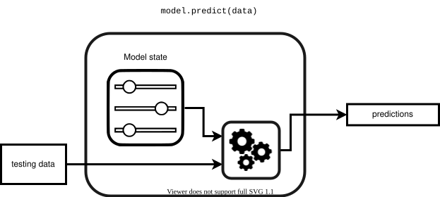
Figure source: Reference [5].y_predicted = knn.predict(X)
# y_predicted is an array of predicted class labels for each input
y_predictedarray([0, 0, 0, 0, 0, 0, 0, 0, 0, 0, 0, 0, 0, 0, 0, 0, 0, 0, 0, 0, 0, 0,
0, 0, 0, 0, 0, 0, 0, 0, 0, 0, 0, 0, 0, 0, 0, 0, 0, 0, 0, 0, 0, 0,
0, 0, 0, 0, 0, 0, 1, 1, 1, 1, 1, 1, 1, 1, 1, 1, 1, 1, 1, 1, 1, 1,
1, 1, 1, 1, 2, 1, 2, 1, 1, 1, 1, 1, 1, 1, 1, 1, 1, 2, 1, 1, 1, 1,
1, 1, 1, 1, 1, 1, 1, 1, 1, 1, 1, 1, 2, 2, 2, 2, 2, 2, 1, 2, 2, 2,
2, 2, 2, 2, 2, 2, 2, 2, 2, 1, 2, 2, 2, 2, 2, 2, 2, 2, 2, 2, 2, 2,
2, 2, 2, 2, 2, 2, 2, 2, 2, 2, 2, 2, 2, 2, 2, 2, 2, 2])y_predicted.shape(150,)The output of model.predict() is an array with a class label assigned to each data instance. The array y_predicted has 150 items, because we passed an array X with 150 data instances.
Compare the predicted class labels to the ground-truth target array y given below.
# Ground-truth target array
yarray([0, 0, 0, 0, 0, 0, 0, 0, 0, 0, 0, 0, 0, 0, 0, 0, 0, 0, 0, 0, 0, 0,
0, 0, 0, 0, 0, 0, 0, 0, 0, 0, 0, 0, 0, 0, 0, 0, 0, 0, 0, 0, 0, 0,
0, 0, 0, 0, 0, 0, 1, 1, 1, 1, 1, 1, 1, 1, 1, 1, 1, 1, 1, 1, 1, 1,
1, 1, 1, 1, 1, 1, 1, 1, 1, 1, 1, 1, 1, 1, 1, 1, 1, 1, 1, 1, 1, 1,
1, 1, 1, 1, 1, 1, 1, 1, 1, 1, 1, 1, 2, 2, 2, 2, 2, 2, 2, 2, 2, 2,
2, 2, 2, 2, 2, 2, 2, 2, 2, 2, 2, 2, 2, 2, 2, 2, 2, 2, 2, 2, 2, 2,
2, 2, 2, 2, 2, 2, 2, 2, 2, 2, 2, 2, 2, 2, 2, 2, 2, 2])We can also make a prediction only on a subset of the data. For example, the next cell shows the prediction for the first two samples. The predicted class labels are 0 and 0.
result = knn.predict(X[0:2])resultarray([0, 0])Note that predict expects the data to be two-dimensional, and if we input only 1 sample, we will get an error.
result_1 = knn.predict(X[0])--------------------------------------------------------------------------- ValueError Traceback (most recent call last) Cell In[20], line 1 ----> 1 result_1 = knn.predict(X[0]) File ~\AppData\Local\anaconda3\Lib\site-packages\sklearn\neighbors\_classification.py:274, in KNeighborsClassifier.predict(self, X) 271 return self.classes_[np.argmax(probabilities, axis=1)] 272 # In that case, we do not need the distances to perform 273 # the weighting so we do not compute them. --> 274 neigh_ind = self.kneighbors(X, return_distance=False) 275 neigh_dist = None 276 else: File ~\AppData\Local\anaconda3\Lib\site-packages\sklearn\neighbors\_base.py:838, in KNeighborsMixin.kneighbors(self, X, n_neighbors, return_distance) 836 X = _check_precomputed(X) 837 else: --> 838 X = validate_data( 839 self, 840 X, 841 ensure_all_finite=ensure_all_finite, 842 accept_sparse="csr", 843 reset=False, 844 order="C", 845 ) 847 n_samples_fit = self.n_samples_fit_ 848 if n_neighbors > n_samples_fit: File ~\AppData\Local\anaconda3\Lib\site-packages\sklearn\utils\validation.py:2954, in validate_data(_estimator, X, y, reset, validate_separately, skip_check_array, **check_params) 2952 out = X, y 2953 elif not no_val_X and no_val_y: -> 2954 out = check_array(X, input_name="X", **check_params) 2955 elif no_val_X and not no_val_y: 2956 out = _check_y(y, **check_params) File ~\AppData\Local\anaconda3\Lib\site-packages\sklearn\utils\validation.py:1091, in check_array(array, accept_sparse, accept_large_sparse, dtype, order, copy, force_writeable, force_all_finite, ensure_all_finite, ensure_non_negative, ensure_2d, allow_nd, ensure_min_samples, ensure_min_features, estimator, input_name) 1084 else: 1085 msg = ( 1086 f"Expected 2D array, got 1D array instead:\narray={array}.\n" 1087 "Reshape your data either using array.reshape(-1, 1) if " 1088 "your data has a single feature or array.reshape(1, -1) " 1089 "if it contains a single sample." 1090 ) -> 1091 raise ValueError(msg) 1093 if dtype_numeric and hasattr(array.dtype, "kind") and array.dtype.kind in "USV": 1094 raise ValueError( 1095 "dtype='numeric' is not compatible with arrays of bytes/strings." 1096 "Convert your data to numeric values explicitly instead." 1097 ) ValueError: Expected 2D array, got 1D array instead: array=[5.1 3.5 1.4 0.2]. Reshape your data either using array.reshape(-1, 1) if your data has a single feature or array.reshape(1, -1) if it contains a single sample.
This is because the shape of the first sample is (4,). If we make the sample two-dimensional with X[np.newaxis, 0], then we can perform a prediction without error.
X[0].shape(4,)# This works, we changed the shape from (4,) to (1,4)
result_1 = knn.predict(X[np.newaxis, 0])print(result_1)[0]Or, we can use the suggestion in the error message, and use array.reshape(1,-1).
first_sample = X[0].reshape(1,-1)
first_sample.shape(1, 4)result_2 = knn.predict(first_sample)
print(result_2)[0]Similarly, we can make predictions by specifying arbitrary input features; for example, an iris flower that has 3cm x 5cm sepal and 4cm x 2cm petal, as follows.
# what kind of iris has 3cm x 5cm sepal and 4cm x 2cm petal?
result_2 = knn.predict([[3, 5, 4, 2]])print(result_2)[1]print(iris.target_names[result_2])['versicolor']We can also perform probabilistic predictions with predict_proba, which outputs the probability that a sample belongs to each of the three iris species. In the output, the first element 1 means target class 0.
knn.predict_proba(first_sample)array([[1., 0., 0.]])Applying the argmax() function will output the index of the greatest element in the array.
knn.predict_proba(first_sample).argmax()np.int64(0)# for the first 4 data samples
knn.predict_proba(X[0:4])array([[1., 0., 0.],
[1., 0., 0.],
[1., 0., 0.],
[1., 0., 0.]])knn.predict_proba(X[0:4]).argmax(axis=1)array([0, 0, 0, 0])Evaluate the Performance
Model evaluation (model validation) is determining how well the model predictions are relative to the known target labels.
To assess the accuracy of the prediction, we can compute the average success rate, i.e., all cases where the predicted target label y_predicted is the same as the ground-truth target label y.
(y == y_predicted).mean()np.float64(0.9666666666666667)Or, using .sum(). we can see that the model predicted correctly 145 samples out of the 150 samples in the dataset. The above function mean() just calculates the average as 145/150.
(y == y_predicted).sum()np.int64(145)And, instead of manually calculating the accuracy, we can use model.score() to calculate the average success rate. This method first performs prediction on a set of data inputs, and afterwards it calculates the accuracy of the predicted class labels in comparison to the true class labels.
The syntax is: model.score(data, target)
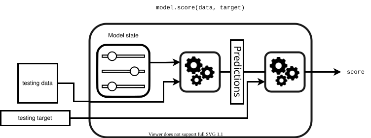
Figure source: Reference [5].accuracy = knn.score(X, y)
accuracy0.9666666666666667One additional way to calculate the average success rate is to import the accuracy_score metric, and then apply it to find the match between ground-truth and predicted class labels.
from sklearn.metrics import accuracy_score
accuracy_score(y, y_predicted)0.9666666666666667Another useful way to examine the prediction results is to view the confusion matrix, that is, the matrix showing the frequency of inputs and outputs for each class. In the output of this cell, we can see in the first row that all 50 data points in class 0 (iris setosa) were correct. In the second row, we see that 47 data points in class 1 (iris versicolor) were correct, but 3 data points were predicted in class 2 (iris virginica). Similarly, 2 data points from class 2 were incorrectly classified as class 1. Apparently, there is some confusion between the second and third species. And, as we know, out of 150 data points, in total 5 data points were misclassified, which can be seen in the off-diagonal elements in the confusion matrix.
from sklearn.metrics import confusion_matrix
print(confusion_matrix(y, y_predicted))[[50 0 0]
[ 0 47 3]
[ 0 2 48]]Train-test Data Split
When building a machine learning model, it is important to evaluate the trained model on data that was not used to fit it, since the generalization ability of the model on new unseen data is of primary concern.
Correct evaluation of a model is done by leaving out a subset of the data when training the model, and using it afterwards for model evaluation.
Scikit-learn provides the function sklearn.model_selection.train_test_split to automatically split a dataset into two subsets: training dataset and testing dataset. This function shuffles the data and randomly splits it into a train and test set. Setting the random_state parameter allows to obtain deterministic results when using a random number generator. Setting stratify=y will ensure that the training and testing datasets have the same proportions of data points from the 3 classes of irises.
from sklearn.model_selection import train_test_split
X_train, X_test, y_train, y_test = train_test_split(X, y, random_state=123, test_size=0.25, stratify=y)print('Training data inputs', X_train.shape)
print('Training labels', y_train.shape)
print('Testing data inputs', X_test.shape)
print('Testing labels', y_test.shape)Training data inputs (112, 4)
Training labels (112,)
Testing data inputs (38, 4)
Testing labels (38,)We can use the bincount() function to examine how the data from different classes were distributed in the training and testing datasets. In the next cell, we can see that the datasets are stratified.
print(np.bincount(y_train))
print(np.bincount(y_test))[38 37 37]
[12 13 13]Let’s re-train and re-evaluate the model.
# 1. initialize the model
knn_model = neighbors.KNeighborsClassifier()
# 2. fit the model on train data
knn_model.fit(X_train, y_train)
# 3. evaluate the model on test data
accuracy = knn_model.score(X_test, y_test)
print(f"The test accuracy is {accuracy*100:5.2f}%")The test accuracy is 97.37%This example was not the best though, because the obtained score on the unseen test data (97.37%) is typically lower than the accuracy obtained by evaluating the model on the training data (96.67% in this case). This is probably due to the small dataset. In practice, evaluating a machine learning model on the training data is unacceptable in all scenarios.
Finally, how do we know how many nearest neighbors to use: 5, 7, 29? Well, it is not easy to answer that question. First, we can make an intuitive guess based on our understanding of the dataset, or second, we can run the model several times using different numbers of nearest neighbors and see which model performs the best. The second approach is more common in practice. In an ensuing section on hyperparameter tuning, we will learn about different strategies for searching for model hyperparameters that result in improved model performance.
Plot the Decision Boundary
If we select only 2 features of the iris data, we can also inspect the decision boundary. Let’s select the last two features, fit a model, and plot the decision boundary for the model using the function in the following cell.
X1 = iris.data[:, [2, 3]] # select only the last two features
y1 = iris.target
X1_train, X1_test, y1_train, y1_test = train_test_split(X1, y1, random_state=123, test_size=0.25, stratify=y1)
knn_model_2 = neighbors.KNeighborsClassifier()
knn_model_2.fit(X1_train, y1_train)
accuracy = knn_model_2.score(X1_test, y1_test)
print(f"The test accuracy is {accuracy*100:5.2f}%")The test accuracy is 97.37%# The code in this cell is not required to quizzes or assignments
from matplotlib.colors import ListedColormap
def plot_decision_regions(X, y, classifier, test_idx=None, resolution=0.02):
# Adapted from Python Machine Learning (2nd Ed.) Code Repository, Sebastian Raschka,
# available at: [https://github.com/rasbt/python-machine-learning-book-2nd-edition]
# setup marker generator and color map
markers = ('s', 'x', 'o', '^', 'v')
colors = ('red', 'blue', 'lightgreen', 'gray', 'cyan')
cmap = ListedColormap(colors[:len(np.unique(y))])
# plot the decision surface
x1_min, x1_max = X[:, 0].min() - 1, X[:, 0].max() + 1
x2_min, x2_max = X[:, 1].min() - 1, X[:, 1].max() + 1
xx1, xx2 = np.meshgrid(np.arange(x1_min, x1_max, resolution),
np.arange(x2_min, x2_max, resolution))
Z = classifier.predict(np.array([xx1.ravel(), xx2.ravel()]).T)
Z = Z.reshape(xx1.shape)
plt.contourf(xx1, xx2, Z, alpha=0.3, cmap=cmap)
plt.xlim(xx1.min(), xx1.max())
plt.ylim(xx2.min(), xx2.max())
for idx, cl in enumerate(np.unique(y)):
plt.scatter(x=X[y == cl, 0],
y=X[y == cl, 1],
alpha=0.8,
c=colors[idx],
marker=markers[idx],
label=cl,
edgecolor='black')
plt.xlabel('petal length')
plt.ylabel('petal width')
plt.legend(loc='upper left')
plt.tight_layout()
plt.show()
plot_decision_regions(X1, y1, classifier=knn_model_2)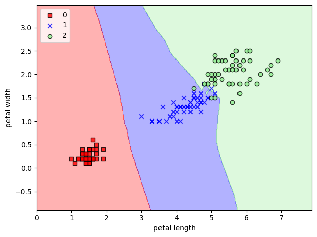
10.2.2 Support Vector Machines (SVM)
Support Vector Machines are supervised learning algorithms used for classification, regression, and outlier detection. SVM are one of the most powerful models in machine learning suited for handling complex and high-dimensional datasets.
SVM algorithm solves an optimization problem to identify a decision boundary (also referred to as hyperplane) that separates class instances in an optimal manner. Specifically, depending on the dimensionality of the data, to separate two-dimensional data into two groups we can use a line (one dimension), then to separate three-dimensional data we can use a plane (two dimensions), or to separate N-dimensional data we can use a hyperplane (N-1 dimensions).
For instance, in the following figure, all lines correctly separate the classes of blue circles and red squares. The question is how to find the best decision boundary?
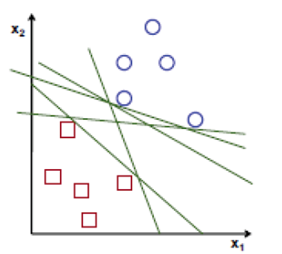
SVM solves this problem by finding the maximum margin between the decision boundary and the data points, where the main assumption is that the line that is farthest from all training examples will have better generalization capabilities. Conversely, hyperplanes that pass too close to the training examples will be sensitive to noise and, therefore, less likely to generalize well for data outside the training set.
The algorithm first identifies a classifier that correctly classifies all the examples, and afterwards increases the geometric margin until it cannot increase the margin any further. In the following figure, the maximum margin boundary is specified by three data points, called support vectors.
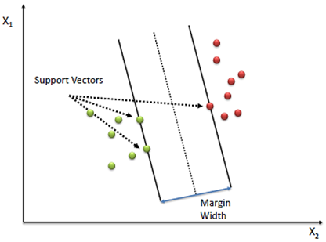
An advantage of SVM is that if the data is linearly separable, there is a unique global solution. An ideal SVM analysis should produce a hyperplane that completely separates the data points into two non-overlapping classes. However, perfect separation may not be possible, and in that situation, SVM finds the hyperplane that maximizes the margin and minimizes the misclassifications.
The mathematical details regarding SVM and other machine learning models are omitted in this lecture. Instead, we will just treat the scikit-learn algorithm as a black box which fits an SVM and predicts on the data.
Let’s import SVM classifier from scikit-learn and fit it to the iris dataset. Note that SVC stands for Support Vector Classifier.
from sklearn.svm import LinearSVC
lin_svm = LinearSVC()
lin_svm.fit(X_train, y_train)LinearSVC()In a Jupyter environment, please rerun this cell to show the HTML representation or trust the notebook.
On GitHub, the HTML representation is unable to render, please try loading this page with nbviewer.org.
Parameters
| penalty | 'l2' | |
| loss | 'squared_hinge' | |
| dual | 'auto' | |
| tol | 0.0001 | |
| C | 1.0 | |
| multi_class | 'ovr' | |
| fit_intercept | True | |
| intercept_scaling | 1 | |
| class_weight | None | |
| verbose | 0 | |
| random_state | None | |
| max_iter | 1000 |
linsvm_pred = lin_svm.predict(X_test)
accuracy_score(y_test, linsvm_pred)1.0confusion_matrix(y_test, linsvm_pred)array([[12, 0, 0],
[ 0, 13, 0],
[ 0, 0, 13]])And recall again that we could have obtained the same result using the score function.
lin_svm.score(X_test, y_test)1.0Interestingly, SVM achieved 100% accuracy on the iris dataset.
SVM Kernel Methods
Although the Linear SVM method is very efficient when the data points are linearly separable, in cases when the data are not linearly separable (as the data in the following figure), SVM will fail, as obviously, no linear discrimination can separate these data points.
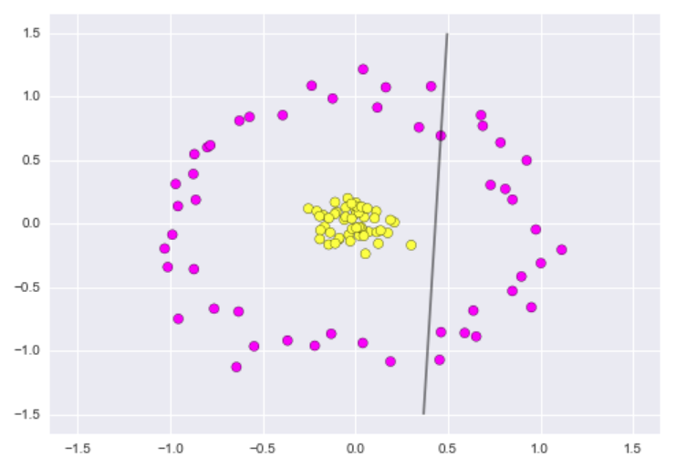
SVM can handle such cases by using a kernel function, which applies a functional transformation of the input data into a different space. This is shown in the following figure, where a non-linear kernel function \(\phi\) is used to map the data \(x\) into a different space where the data is linearly separable. This is called the kernel trick, which means the kernel function transforms the data into a higher dimensional feature space to make it possible to perform the linear separation.
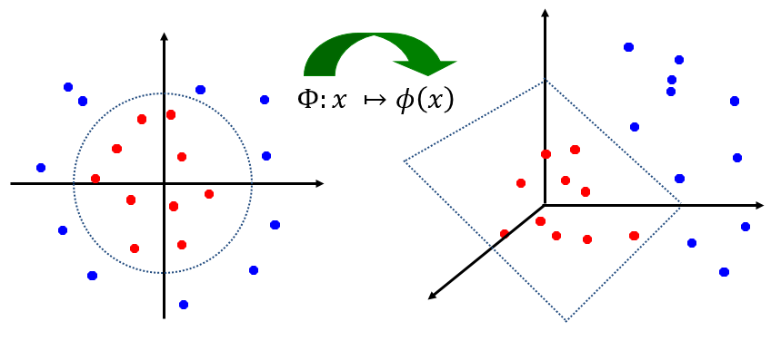
SVM supports several kernels, including linear, polynomial, sigmoid, and rbf kernels. Linear kernel is just the regular SVM. Among the non-linear kernels, Gaussian radial basis function (RBF) kernel is one of the most commonly used. In scikit-learn, SVM with a linear kernel can be imported as LinearSVC (as we did above), while SVC provides access to the different kernels (meaning that LinearSVC can be implemented as SVC with the argument kernel = 'linear').
Let’s try to apply SVM with polynomial and rbf kernels to the Iris dataset and compare the results.
from sklearn.svm import SVC
poly_svm = SVC(kernel='poly')
poly_svm.fit(X_train, y_train)SVC(kernel='poly')In a Jupyter environment, please rerun this cell to show the HTML representation or trust the notebook.
On GitHub, the HTML representation is unable to render, please try loading this page with nbviewer.org.
Parameters
| C | 1.0 | |
| kernel | 'poly' | |
| degree | 3 | |
| gamma | 'scale' | |
| coef0 | 0.0 | |
| shrinking | True | |
| probability | False | |
| tol | 0.001 | |
| cache_size | 200 | |
| class_weight | None | |
| verbose | False | |
| max_iter | -1 | |
| decision_function_shape | 'ovr' | |
| break_ties | False | |
| random_state | None |
polysvm_pred = poly_svm.predict(X_test)
accuracy_score(y_test, polysvm_pred)0.9736842105263158rbf_svm = SVC(kernel='rbf')
rbf_svm.fit(X_train, y_train)SVC()In a Jupyter environment, please rerun this cell to show the HTML representation or trust the notebook.
On GitHub, the HTML representation is unable to render, please try loading this page with nbviewer.org.
Parameters
| C | 1.0 | |
| kernel | 'rbf' | |
| degree | 3 | |
| gamma | 'scale' | |
| coef0 | 0.0 | |
| shrinking | True | |
| probability | False | |
| tol | 0.001 | |
| cache_size | 200 | |
| class_weight | None | |
| verbose | False | |
| max_iter | -1 | |
| decision_function_shape | 'ovr' | |
| break_ties | False | |
| random_state | None |
rbfsvm_pred = rbf_svm.predict(X_test)
accuracy_score(y_test, rbfsvm_pred)0.9736842105263158confusion_matrix(y_test, rbfsvm_pred)array([[12, 0, 0],
[ 0, 12, 1],
[ 0, 0, 13]])Therefore, for the Iris dataset the linear kernel has the best performance, indicating that the data is linearly separable.
Due to supporting different types of kernels, SVM can tackle different kinds of datasets, both linear and non-linear. In the real world, many datasets are not linear. If we cannot get good results with linear models, it helps to apply SVM with non-linear kernels.
Let’s compare two SVM models using a linear and rbf kernel to the following data which is obviously non-linearly separable.
from sklearn.datasets import make_circles
X2, y2 = make_circles(100, factor=.1, noise=.1)
plt.scatter(X2[:, 0], X2[:, 1], c=y2, s=50, cmap='spring')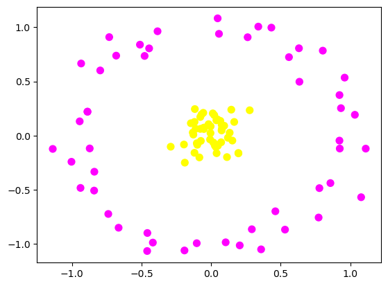
X2_train, X2_test, y2_train, y2_test = train_test_split(X2, y2, random_state=123, test_size=0.25)rbf_svm = SVC(kernel='rbf')
rbf_svm.fit(X2_train, y2_train)SVC()In a Jupyter environment, please rerun this cell to show the HTML representation or trust the notebook.
On GitHub, the HTML representation is unable to render, please try loading this page with nbviewer.org.
Parameters
| C | 1.0 | |
| kernel | 'rbf' | |
| degree | 3 | |
| gamma | 'scale' | |
| coef0 | 0.0 | |
| shrinking | True | |
| probability | False | |
| tol | 0.001 | |
| cache_size | 200 | |
| class_weight | None | |
| verbose | False | |
| max_iter | -1 | |
| decision_function_shape | 'ovr' | |
| break_ties | False | |
| random_state | None |
rbfsvm_pred = rbf_svm.predict(X2_test)
accuracy_score(y2_test, rbfsvm_pred)1.0lin_svm_2 = SVC(kernel='linear')
lin_svm_2 .fit(X2_train, y2_train)SVC(kernel='linear')In a Jupyter environment, please rerun this cell to show the HTML representation or trust the notebook.
On GitHub, the HTML representation is unable to render, please try loading this page with nbviewer.org.
Parameters
| C | 1.0 | |
| kernel | 'linear' | |
| degree | 3 | |
| gamma | 'scale' | |
| coef0 | 0.0 | |
| shrinking | True | |
| probability | False | |
| tol | 0.001 | |
| cache_size | 200 | |
| class_weight | None | |
| verbose | False | |
| max_iter | -1 | |
| decision_function_shape | 'ovr' | |
| break_ties | False | |
| random_state | None |
linsvm_pred = lin_svm_2.predict(X2_test)
accuracy_score(y2_test, linsvm_pred)0.4As expected, the model with the rbf kernel performed much better than the linear model.
Plot the Decision Boundary
We can also plot the decision boundary again when using two features of the dataset. Note that in this case because we use only two features, the accuracy of linear SVM is not 100%.
lin_svm_3 = SVC(kernel='linear')
lin_svm_3.fit(X1_train, y1_train)
accuracy = lin_svm_3.score(X1_test, y1_test)
print(f"The test accuracy is {accuracy*100:5.2f}%")
plot_decision_regions(X1, y1, classifier=lin_svm_3)The test accuracy is 97.37%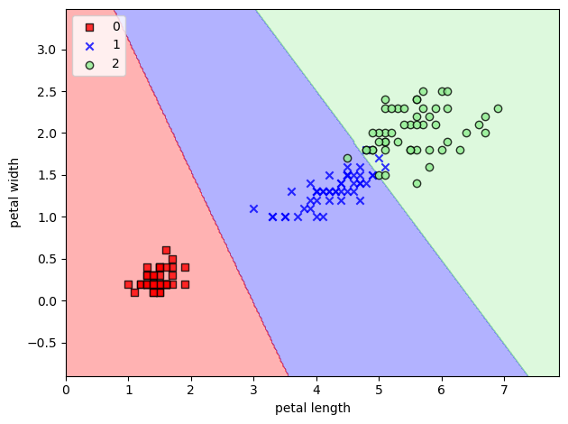
rbf_svm_3 = SVC(kernel='rbf')
rbf_svm_3.fit(X1_train, y1_train)
accuracy = rbf_svm_3.score(X1_test, y1_test)
print(f"The test accuracy is {accuracy*100:5.2f}%")
plot_decision_regions(X1, y1, classifier=rbf_svm_3)The test accuracy is 94.74%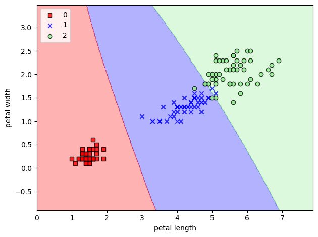
10.2.3 Logistic Regression
Logistic Regression is one of the most frequently used classifiers, because it is simple and fast, it performs well on linearly separable data, and it can produce good baseline performance. The name can be confusing, because Logistic Regression is a classification algorithm, and not a regression algorithm.
The main concept of classification with Logistic Regression is shown in the next figure. Namely, for a set of input features \(x_0, x_1, ..., x_m\), the algorithm calculates a set of weights \(w_0, w_1, ..., w_m\). The product of the input features and weights \(\boldsymbol{w^T*x}\) is passed through a logistic sigmoid activation function, also simply known as sigmoid function. The parameters (weights) of Logistic Regression \(w_0, w_1, ..., w_m\) are learned by applying an optimization algorithm (e.g., gradient descent, or Newton methods), and it can be considered a simple type of neural network with one layer.
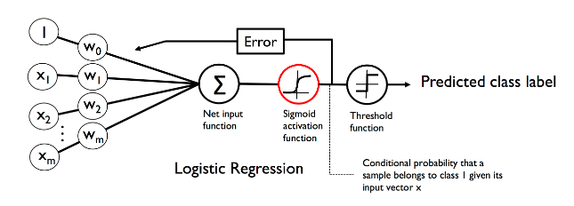
The plot of a sigmoid function is shown on the next graph, for an input \(z = \boldsymbol{w^T*x}\). The function squeezes all inputs into the [0,1] range. The output of the sigmoid function can be interpreted as a probability that the data point belongs to class 1 or 0 in binary classification problems (two classes).
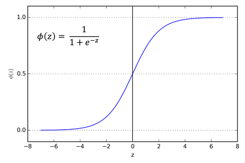
For multiclass classification problems, the softmax function is used as a generalized version of the sigmoid function, and it outputs the probability that a data point belongs to multiple classes.
Let’s fit a Logistic Regression model to the Iris dataset.
from sklearn.linear_model import LogisticRegression
lr_model_1 = LogisticRegression()
lr_model_1.fit(X_train, y_train)
accuracy = lr_model_1.score(X_test, y_test)
print(f"The test accuracy is {accuracy*100:5.2f}%")The test accuracy is 97.37%Plot the Decision Boundary
lr_model_2 = LogisticRegression()
lr_model_2.fit(X1_train, y1_train)
accuracy = lr_model_2.score(X1_test, y1_test)
print(f"The test accuracy is {accuracy*100:5.2f}%")
plot_decision_regions(X1, y1, classifier=lr_model_2)The test accuracy is 97.37%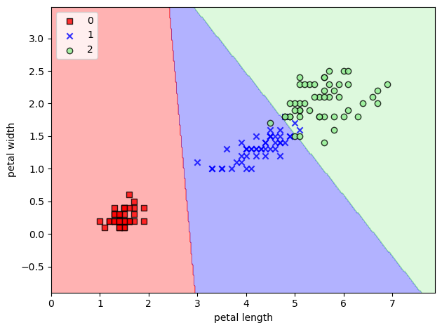
10.2.4 Decision Trees
Decision trees is a machine learning algorithm based on applying an intuitive way to classify or label objects, by simply asking a series of questions designed to help the classification. A simple example is shown below, where the decision tree starts from the root node and splits the data at each next node based on selected features and a threshold value. The nodes create the branches of the tree.
The total number of times the nodes are split is the depth of the tree. We can typically set a limit for the maximum depth of the tree. The ending nodes in the tree are called leaf nodes.
Decision trees can be applied for classification and regression of numerical and categorical features. For numerical data, the same concept applies, where the tree can split the data based on selected features and threshold values.
To make predictions on new data, we follow the branches from the root node to a leaf node by following the splits based on the values of the input features. The predicted class is the value associated with the leaf node reached.
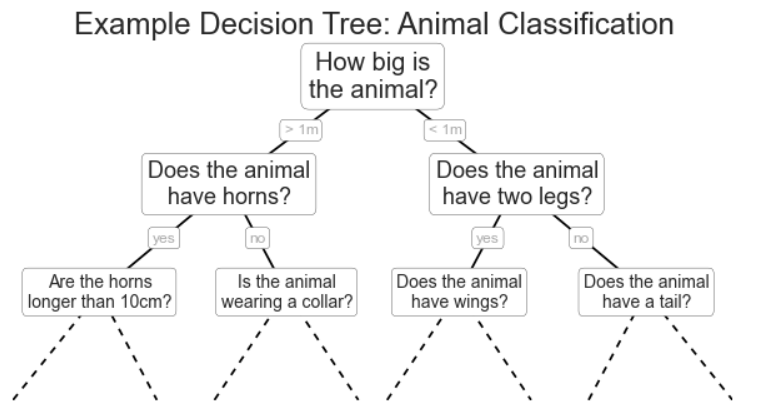
Figure source: Reference [1].The trick in splitting the nodes is to ask the right questions. In training a decision tree classifier, the algorithm looks at the data and selects the features and threshold values that contain the most information (i.e., maximize the information gain). Several splitting criteria are available in scikit-learn. In the following example, criterion='gini' indicates that the “gini impurity” criterion is used.
Here is an example of training a decision tree classifier in scikit-learn on the Iris dataset.
from sklearn.tree import DecisionTreeClassifier
tree_model_1 = DecisionTreeClassifier(criterion='gini', max_depth=4)
tree_model_1.fit(X_train, y_train)
tree_pred = tree_model_1.predict(X_test)
accuracy = accuracy_score(y_test, tree_pred)
print(f"The test accuracy is {accuracy*100:5.2f}%")The test accuracy is 97.37%Scikit-learn has a function for plotting decision trees. In the plot below, we can see that splitting was done mostly based on the features X[2] and X[3]. For instance, in the root node if the petal length is < 2.45 cm, then split the node, etc.
from sklearn import tree
plt.figure(figsize=(8,8))
tree.plot_tree(tree_model_1)
plt.show()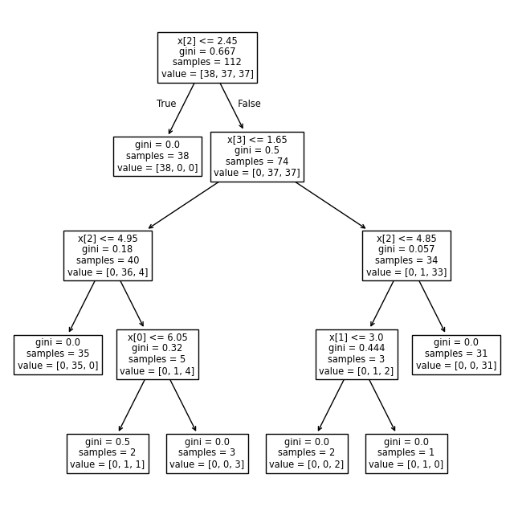
Plot the Decision Boundary
The decision boundary is shown in the figure below. The decision tree algorithm separates the data by dividing the space of the input features into rectangles.
One issue with Decision Trees is that it is easy to create trees that overfit the data. That is, such models can fit the training data almost perfectly, to the point where they begin fitting the noise in the data. This can be seen below for the decision boundary for the second class.
tree_model_2 = DecisionTreeClassifier(criterion='gini', max_depth=6)
tree_model_2.fit(X1_train, y1_train)
tree_pred = tree_model_2.predict(X1_test)
accuracy = accuracy_score(y1_test, tree_pred)
print(f"The test accuracy is {accuracy*100:5.2f}%")
plot_decision_regions(X1, y1, classifier=tree_model_2)The test accuracy is 94.74%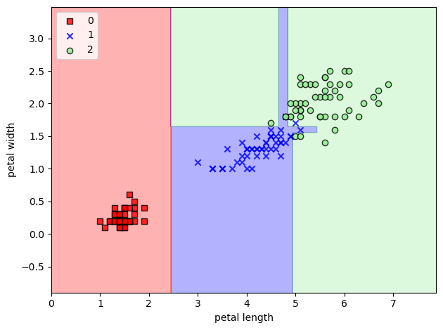
One possible way to address overfitting is to use an ensemble method, which essentially averages the results of many individual estimators that overfit the data. The resulting ensemble estimators are usually more robust and accurate than the individual estimators which make them up.
One of the most common ensemble methods is Random Forest, in which the ensemble is made up of many decision trees. This is the topic of the next section.
10.2.5 Random Forest
As we mentioned, Random Forest uses many decision trees (n_estimators below) to create a more robust model that has reduced overfitting on the data. Typically, using a larger number of estimators results in improved performance, but increased computational cost.
In the next cell, we used 100 estimators (decision trees). The parameter n_jobs specifies the number of CPU cores used for speeding up the model training by using parallel processing, where different cores can process different decision trees.
from sklearn.ensemble import RandomForestClassifier
rf_model_1 = RandomForestClassifier(criterion='gini', n_estimators=100, random_state=1, n_jobs=2)
rf_model_1.fit(X_train, y_train)
rf_pred = rf_model_1.predict(X_test)
accuracy = accuracy_score(y_test, rf_pred)
print(f"The test accuracy is {accuracy*100:5.2f}%")The test accuracy is 97.37%Plot the Decision Boundary
rf_model_2 = RandomForestClassifier(criterion='gini', n_estimators=100, random_state=1, n_jobs=2)
rf_model_2.fit(X1_train, y1_train)
rf_pred = rf_model_2.predict(X1_test)
accuracy = accuracy_score(y1_test, rf_pred)
print(f"The test accuracy is {accuracy*100:5.2f}%")
plot_decision_regions(X1, y1, classifier=rf_model_2)The test accuracy is 97.37%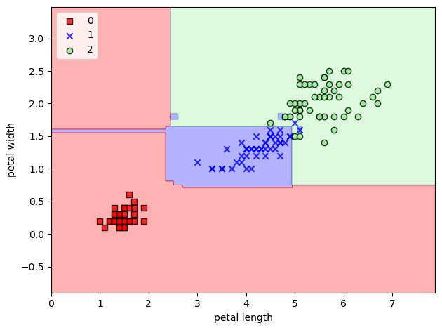
10.2.6 Naive Bayes
Naive Bayes are a set of learning algorithms that are based on applying Bayes’ theorem. According to the theorem, the posterior probability of the class label \(y\) given input features \(x_1, \dots, x_n\) can be calculated based on the prior probability of the class \(P(y)\), the likelihood of the training data given the class label \(P(x_1, \dots, x_n \mid y)\), and the evidence \(P(x_1, \dots, x_n)\).
\(P(y \mid x_1, \dots, x_n) = \frac{P(y) P(x_1, \dots, x_n \mid y)} {P(x_1, \dots, x_n)}\)
This method is called Naive Bayes, because it is based on a “naive” assumption that the input features are independent given the class label.
The implementation is shown below.
from sklearn.naive_bayes import GaussianNB
nb_model_1 = GaussianNB()
nb_model_1.fit(X_train, y_train)
nb_pred = nb_model_1.predict(X_test)
accuracy = accuracy_score(y_test, nb_pred)
print(f"The test accuracy is {accuracy*100:5.2f}%")The test accuracy is 97.37%Scikit-learn offers several different implementations of Naive Bayes, which differ based on the assumption made about the distribution of the training data. These include: GaussianNB (typically used with continuous features that have normal distribution), BernoulliNB (used with binary features), CategoricalNB (used with categorical features), and MutlinomialNB (used with discrete features that represent counts or frequencies).
10.2.7 Perceptron
Perceptron classification algorithm has similarities to the Logistic Regression classifier, and they are both linear classifiers that can be seen as a simple one-layer neural network. Both algorithms learn a set of weights and use similar learning strategies. One difference is that Perceptron uses a step threshold function to output the class prediction, and Logistic Regression uses a sigmoid logistic function to output the class prediction.
Perceptron outputs a binary class label based on whether the product of input and weights is above or below a certain threshold. The parameters in Perceptron are updated via a simple learning algorithm. Whenever a misclassification occurs, the algorithm tries to minimize classification errors.
Perceptron is most suitable for binary classification of linearly separable data.
The following figure depicts classification with Perceptron.
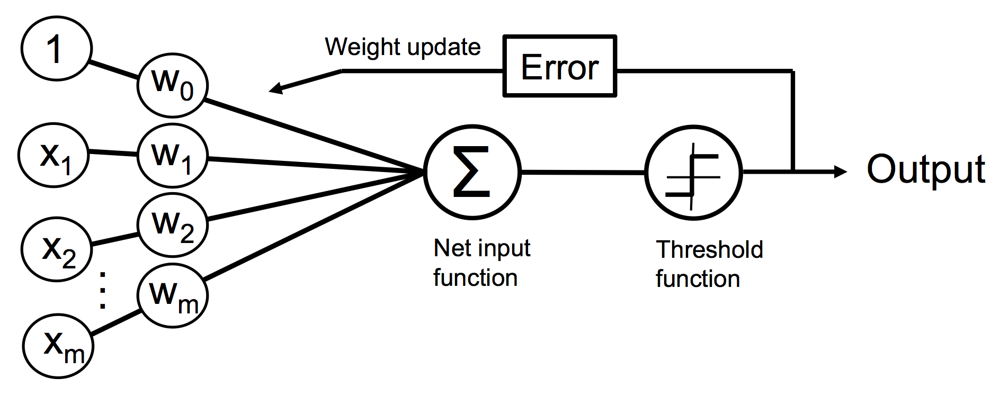
Figure source: Reference [2].In the model below, the argument max_iter is the number of epochs (i.e., the number of passes through the training data), and eta0 is the learning rate of the model.
from sklearn.linear_model import Perceptron
ppn_model_1 = Perceptron(max_iter=40, eta0=0.1)
ppn_model_1.fit(X_train, y_train)
ppn_pred = ppn_model_1.predict(X_test)
accuracy = accuracy_score(y_test, ppn_pred)
print(f"The test accuracy is {accuracy*100:5.2f}%")The test accuracy is 65.79%This type of learning algorithms require more finetuning of the hyperparameters. One of the most important parameters is the learning rate (eta0 in this case). Let’s try to change it.
ppn_model_2 = Perceptron(max_iter=40, eta0=0.001)
ppn_model_2.fit(X_train, y_train)
ppn_pred = ppn_model_2.predict(X_test)
accuracy = accuracy_score(y_test, ppn_pred)
print(f"The test accuracy is {accuracy*100:5.2f}%")The test accuracy is 78.95%Although the accuracy improved with a different learning rate, the performance is still not very good. One reason may be because this algorithm is more sensitive to the range of input data, and we may need to scale the training data to obtain better performance.
Plot the Decision Boundary
ppn_model_3 = Perceptron(max_iter=40, eta0=0.001)
ppn_model_3.fit(X1_train, y1_train)
ppn_pred = ppn_model_3.predict(X1_test)
accuracy = accuracy_score(y1_test, ppn_pred)
print(f"The test accuracy is {accuracy*100:5.2f}%")
plot_decision_regions(X1, y1, classifier=ppn_model_3)The test accuracy is 81.58%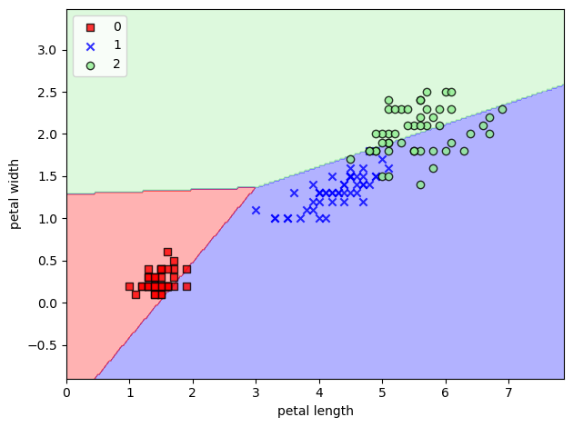
10.2.8 Stochastic Gradient Descent (SGD)
Stochastic Gradient Descent (SGD) is another popular estimator in scikit-learn. In fact, SGD is an optimization technique, and it does not correspond to a specific family of machine learning models. In other words, SGD is just an approach to train a model using stochastic gradient descent to learn an optimal set of model parameters that minimize a loss function.
SGD in scikit-learn supports several loss functions, and depending on the loss parameters that we select, it is used for different types of classification tasks. For instance, if we use loss='perceptron' it will be equivalent to solving the Perceptron algorithm with SGD optimization. Using loss='log_loss' is equivalent to training Logistic Regression with SGD using log loss, which is also known as logistic loss or binary cross-entropy loss. Similarly, using loss='hinge' corresponds to linear SVM.
from sklearn.linear_model import SGDClassifier
sgd_model_1 = SGDClassifier(max_iter=80, loss='hinge', random_state=1)
sgd_model_1 .fit(X_train, y_train)
sgd_pred = sgd_model_1 .predict(X_test)
accuracy = accuracy_score(y_test, sgd_pred)
print(f"The test accuracy is {accuracy*100:5.2f}%")The test accuracy is 92.11%from sklearn.linear_model import SGDClassifier
sgd_model_1 = SGDClassifier(max_iter=80, loss='log_loss', random_state=1)
sgd_model_1 .fit(X_train, y_train)
sgd_pred = sgd_model_1 .predict(X_test)
accuracy = accuracy_score(y_test, sgd_pred)
print(f"The test accuracy is {accuracy*100:5.2f}%")The test accuracy is 65.79%from sklearn.linear_model import SGDClassifier
sgd_model_2 = SGDClassifier(max_iter=40, loss='perceptron', random_state=1)
sgd_model_2.fit(X_train, y_train)
sgd_pred = sgd_model_2.predict(X_test)
accuracy = accuracy_score(y_test, sgd_pred)
print(f"The test accuracy is {accuracy*100:5.2f}%")The test accuracy is 65.79%Similar to Perceptron, SGD is sensitive to feature scaling. And also, scikit-learn offers SGDRegressor for regression tasks.
10.3 Supervised Learning: Regression
10.3.1 Linear Regression
Estimator functions in scikit-learn are implemented in a very similar way as the classification estimators.
For instance, a Linear Regression estimator is imported and implemented in scikit-learn as follows.
from sklearn.linear_model import LinearRegressionIn the following cell, a new instance of a Linear Regression estimator is created, and we named it lr_model.
lr_model = LinearRegression()print(lr_model)LinearRegression()Let’s create data for fitting the Linear Regression model. For example, we can create data for a line 2 * x + 1.
x = np.arange(10)
y = 2 * x + 1
print(x)
print(y)
plt.plot(x, y, 'o')
plt.show()[0 1 2 3 4 5 6 7 8 9]
[ 1 3 5 7 9 11 13 15 17 19]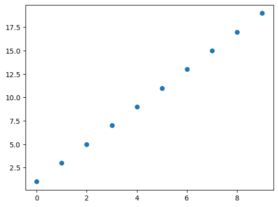
Since the input data in scikit-learn needs to be a 2-dimensional array, we will add a second dimension to X with np.newaxis.
# The input data needs to be a 2D array
X = x[:, np.newaxis]
print(X.shape)
print(y.shape)(10, 1)
(10,)The next line fits the model to the data.
# fit the model on our data
lr_model.fit(X, y)LinearRegression()In a Jupyter environment, please rerun this cell to show the HTML representation or trust the notebook.
On GitHub, the HTML representation is unable to render, please try loading this page with nbviewer.org.
Parameters
| fit_intercept | True | |
| copy_X | True | |
| tol | 1e-06 | |
| n_jobs | None | |
| positive | False |
The learned model parameters are shown next.
# underscore at the end indicates a fit parameter
print(lr_model.coef_)
print(lr_model.intercept_)[2.]
1.0000000000000053In linear regression, the goal is to learn a linear model (line) that fits the input data in an optimal way. The estimator has two parameters: coefficient (the slope of the line) and intercept (the point of interception of the y-axis). The algorithm solves the linear regression by minimizing the deviations (residuals) of the input data from the line.
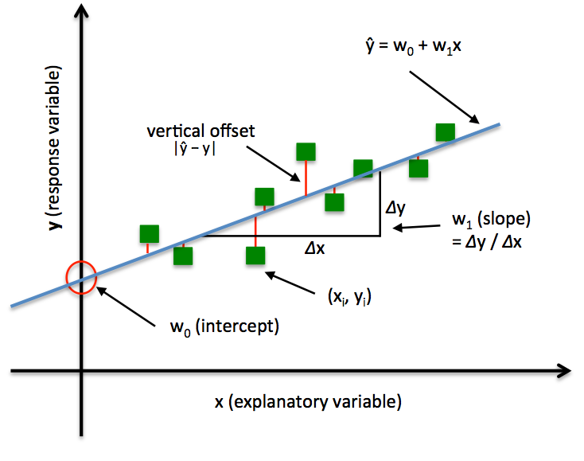
The two parameters shown in the above cell are correctly estimated, since the data was generated from the line 2 * x + 1, and the model found a line with a slope 2 and intercept of approximately 1, as expected.
10.3.2 Linear Regression with Noisy Data
Let’s look at another example where the data does not come from a straight line.
# Create data
np.random.seed(0)
X = np.random.random(size=(20, 1))
y = 3 * X.squeeze() + 2 + np.random.randn(20)
plt.plot(X.squeeze(), y, 'o')
plt.show()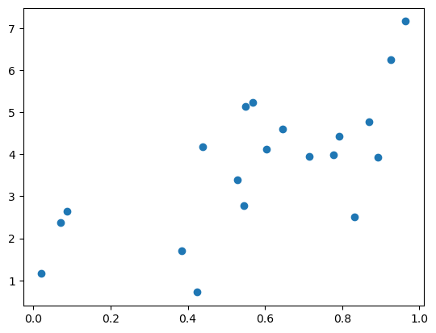
Let’s apply Linear Regression to obtain a new model that fits the data.
lr_model_2 = LinearRegression()
lr_model_2.fit(X, y)LinearRegression()In a Jupyter environment, please rerun this cell to show the HTML representation or trust the notebook.
On GitHub, the HTML representation is unable to render, please try loading this page with nbviewer.org.
Parameters
| fit_intercept | True | |
| copy_X | True | |
| tol | 1e-06 | |
| n_jobs | None | |
| positive | False |
We can predict the target values y_predicted for given input values X, as with classifier estimators.
y_predicted = lr_model_2.predict(X)plt.plot(X, y, 'o') # plot the training data with circle markers
plt.plot(X, y_predicted) # plot the predicted line
plt.show()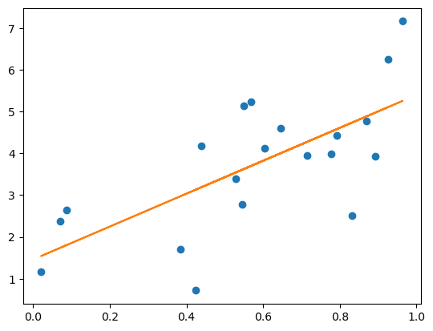
10.3.3 Regression with Random Forest
Besides Linear Regression, scikit-learn also offers many more sophisticated models for regression. In the next example, a Random Forest regression model is used to fit the data that we created. The output of the model is non-linear, and hence, this model fits better the data than the Linear Regression model.
# Fit a Random Forest
from sklearn.ensemble import RandomForestRegressor
rf_model = RandomForestRegressor()
rf_model.fit(X, y)
X_fit = np.linspace(0, 1, 100)[:, np.newaxis]
y_predicted = rf_model.predict(X_fit)
# Plot the data and the model prediction
plt.plot(X, y, 'o')
plt.plot(X_fit.squeeze(), y_predicted)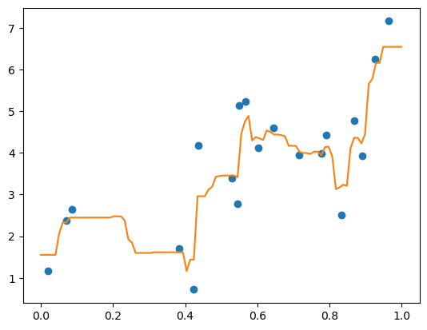
10.4 Unsupervised Learning: Clustering
Unsupervised learning algorithms employ data without labels, and often focus on finding similarities or patterns in the set of samples. Unsupervised learning comprises tasks such as dimensionality reduction, clustering, and density estimation.
10.4.1 Clustering with k-Means
Clustering methods find clusters in the data, i.e., they group together data points that are homogeneous with respect to a given criterion.
A popular clustering algorithm is k-means clustering, which iteratively calculates distances from data points to centroids of clusters, until the distances from all data points to the centroids of the clusters are minimized. It employs the Expectation Maximization approach to cluster the data points.
from sklearn.cluster import KMeans
k_means = KMeans(n_clusters=3, random_state=0)
k_means.fit(X_train)
y_pred = k_means.predict(X_train)
plt.scatter(X_train[:, 2], X_train[:, 3], c=y_pred, cmap='rainbow');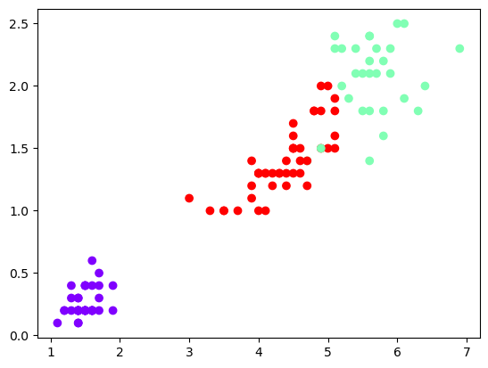
Here is one more example.
from sklearn.datasets import make_blobs
# n_samples is number of blobs, centers is number of clusters, cluster_std is the standard deviation of each cluster
X3, y3 = make_blobs(n_samples=300, centers=4, random_state=0, cluster_std=0.60)
plt.scatter(X3[:, 0], X3[:, 1], s=50);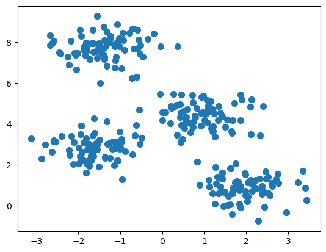
k_means_2 = KMeans(n_clusters=4, random_state=0) # 4 clusters
k_means_2.fit(X3)
kmeans_pred = k_means_2.predict(X3)
plt.scatter(X3[:, 0], X3[:, 1], c=kmeans_pred, s=50, cmap='rainbow');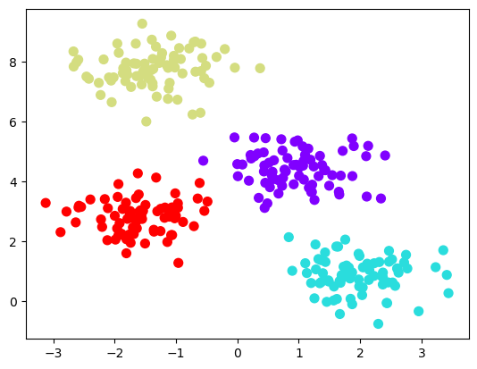
k_means_2 = KMeans(n_clusters=3, random_state=0) # 3 clusters
k_means_2.fit(X3)
kmeans_pred = k_means_2.predict(X3)
plt.scatter(X3[:, 0], X3[:, 1], c=kmeans_pred, s=50, cmap='rainbow');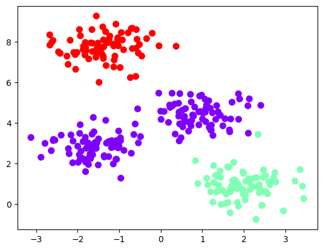
10.5 Hyperparameter Tuning
During model training, the parameters of the model are updated in an iterative process. Hyperparameters (tuning parameters) are a set of parameters that control the complexity of the model. For instance, in k-Nearest Neighbors, the number of nearest neighbors is a hyperparameter of the model. Or, in Random Forest the number of used decision trees is a hyperparameter. Unlike the model parameters that are learned during training, hyperparameters are selected (i.e., tuned) by the user. While models such as kNN have only one or two hyperparameters, other models such as deep neural networks can have many.
Hyperparameter tuning is the process of screening hyperparameter values (or combinations of hyperparameter values) to find a model that generalizes well to unseen data. The performance of some models (e.g., deep neural networks) can significantly depend on the value of hyperparameters.
For instance, to find a suitable value for the number of nearest neighbors in kNN, we can write a for-loop to train the kNN model multiple times and evaluate the performance when the number of nearest neighbors varies from 3 to 15, as in the next cell. We can see that the best performance is achieved for 3 to 5 neighbors.
from sklearn.neighbors import KNeighborsClassifier
for n_neighbors in range(3, 15):
knn_model = KNeighborsClassifier(n_neighbors)
knn_model.fit(X_train, y_train)
accuracy = knn_model.score(X_test, y_test)
print('Number of neighbors is {0:}, the test accuracy is {1:5.2f} %'.format(n_neighbors, accuracy*100))Number of neighbors is 3, the test accuracy is 97.37 %
Number of neighbors is 4, the test accuracy is 97.37 %
Number of neighbors is 5, the test accuracy is 97.37 %
Number of neighbors is 6, the test accuracy is 94.74 %
Number of neighbors is 7, the test accuracy is 94.74 %
Number of neighbors is 8, the test accuracy is 94.74 %
Number of neighbors is 9, the test accuracy is 94.74 %
Number of neighbors is 10, the test accuracy is 92.11 %
Number of neighbors is 11, the test accuracy is 94.74 %
Number of neighbors is 12, the test accuracy is 94.74 %
Number of neighbors is 13, the test accuracy is 94.74 %
Number of neighbors is 14, the test accuracy is 94.74 %10.5.1 Grid Search
Scikit-learn offers the function GridSearchCV() for hyperparameter tuning, which searches through different values of hyperparameters to find the best combination of values based on a used performance metric. The letters CV in the name of the function stand for cross-validation, which is explained in the next section.
When there are several hyperparameters to tune, doing it manually can take time and resources, and functions like GridSearchCV can help to automate the tuning of hyperparameters.
In the cell below, we can see that GridSearchCV() takes as arguments the model, a grid of hyperparameter values named hyper_grid, and a scoring function (in this case accuracy). It will loop through the predefined values for the hyperparameters in the grid and fit the model for each predefined value. Based on the scoring function, it will find the best values from the listed hyperparameters.
from sklearn.model_selection import GridSearchCV
knn_model = KNeighborsClassifier()
# Create grid of hyperparameter values
hyper_grid = {'n_neighbors': [3, 6, 9, 12]}
# Tune a knn model using grid search
grid_search = GridSearchCV(knn_model, hyper_grid, scoring='accuracy')
results = grid_search.fit(X_train, y_train)The best accuracy score on the training dataset and best value of the hyperparameters are attributes of the results from the grid search.
results.best_score_np.float64(0.9557312252964426)results.best_params_{'n_neighbors': 3}And, we can check the accuracy on the test set as well to confirm that the results are consistent with the accuracies in the previous section.
accuracy = grid_search.score(X_test, y_test)
print(f"The test accuracy is {accuracy*100:5.2f}%")The test accuracy is 97.37%One more example is shown below, where a Support Vector Machines Classifier is used with the same dataset, and grid search is performed over two hyperparameters: C is a regularization value, and kernel is the kernel type. The function searches over all combinations of the two hyperparameters, and the best accuracy is achieved for C=0.1 and kernel='linear'.
from sklearn.svm import SVC
svc_model = SVC()
hyper_grid = {'C': [0.01, 0.1, 1.0, 10.0, 100.0],
'kernel': ['linear', 'rbf', 'poly']}
grid_search = GridSearchCV(svc_model, hyper_grid, scoring='accuracy')
results = grid_search.fit(X_train, y_train)
print('Accuracy:',results.best_score_)
print('Hyperparameters:', results.best_params_)Accuracy: 0.9739130434782609
Hyperparameters: {'C': 1.0, 'kernel': 'poly'}accuracy = grid_search.score(X_test, y_test)
print(f"The test accuracy is {accuracy*100:5.2f}%")The test accuracy is 97.37%10.5.2 Random Search
However, a Cartesian grid search approach performed by GridSeachCV() has limitations, because it does not scale well when the number of hyperparameters to tune is high. Random search based on hyperparameter distributions is another approach for hyperparameter tuning which has often demonstrated better performance than grid search.
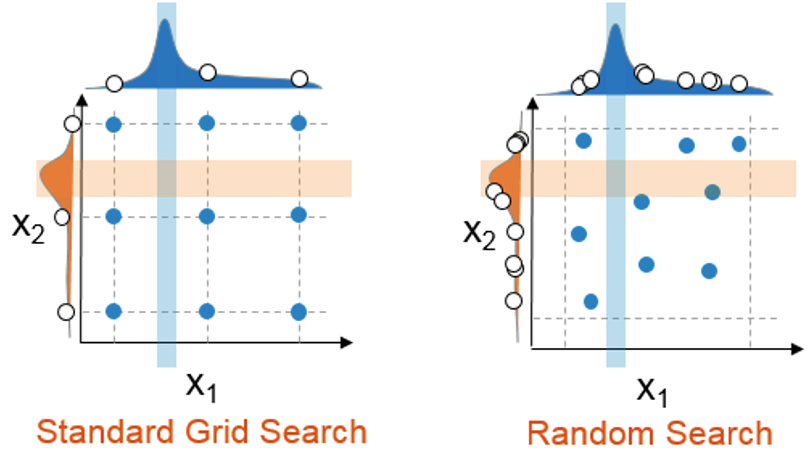
Figure source: Reference [4].An example of using Random Search with the SVM classifier is shown next where we used the function RandomizedSearchCV(). Unlike the grid search, in this case, the distribution of the hyperparameter C is specified, as a uniform distribution with values between 0.01 and 100. Also, in the RandomizedSearchCV() we need to provide the number of samples for the hyperparameter from the distribution via the n_iter argument.
from sklearn.model_selection import RandomizedSearchCV
from scipy.stats import uniform, randint
svc_model = SVC()
# specify hyperparameter distributions to randomly sample from
hyper_distributions = {'C': uniform(0.01, 100)}
random_search = RandomizedSearchCV(svc_model, hyper_distributions, n_iter=40, scoring='accuracy')
results = random_search.fit(X_train, y_train)
print('Accuracy:',results.best_score_)
print('Hyperparameters:', results.best_params_)Accuracy: 0.9735177865612649
Hyperparameters: {'C': np.float64(29.838232595603078)}accuracy = random_search.score(X_test, y_test)
print(f"The test accuracy is {accuracy*100:5.2f}%")The test accuracy is 100.00%One more example of a random search is shown with a Random Forest classifier. Random Forests can have several hyperparameters, and here we considered the number of trees in the forest with n_estimators, maximum depth of the trees is max_depth, and the minimum number of samples required in a leaf node is min_samples_leaf. These hyperparameters are sampled from a uniform distribution of integers, with the ranges of values defined for each hyperparameter using the function randint(). For this case, a standard grid search would be more computationally expensive.
from sklearn.ensemble import RandomForestClassifier
rf_model = RandomForestClassifier(random_state=123)
# specify hyperparameter distributions to randomly sample from
hyper_distributions = {
'n_estimators': randint(20, 100),
'max_depth': randint(4, 20),
'min_samples_leaf': randint(1, 100),
}
random_search_2 = RandomizedSearchCV(rf_model, hyper_distributions, n_iter=20, scoring='accuracy')
results = random_search_2.fit(X_train, y_train)
print('Accuracy:',results.best_score_)
print('Hyperparameters:', results.best_params_)Accuracy: 0.9466403162055336
Hyperparameters: {'max_depth': 10, 'min_samples_leaf': 10, 'n_estimators': 80}accuracy = random_search_2.score(X_test, y_test)
print(f"The test accuracy is {accuracy*100:5.2f}%")The test accuracy is 97.37%10.6 Cross-Validation
So far, we adopted a strategy to split our data into training and testing sets, and we assessed the performance of our model on the test set. Unfortunately, there are a few pitfalls to this approach:
- If our dataset is small, a single test set may not provide an adequate measure of the model’s performance on unseen data.
- A single test set does not provide insights regarding the variability of the model’s performance.
An alternative strategy is to use a resampling method, where we can repeatedly fit a model to parts of the training data and test its performance on other parts of the training data. This allows us to train and validate our model entirely on the training data and not touch the test data until we have selected a final “optimal” model. The two most commonly used resampling methods include k-fold cross-validation and bootstrap sampling. This section focuses on k-fold cross-validation.
10.6.1 k-Fold Cross-Validation
Cross-validation involves repeating the training and testing procedure so that the training and testing sets are different each time. The values of the performance metrics are collected for each repetition and then aggregated. This allows to obtain an estimate of the variability of the model’s performance. Also, a single train-test split may lead to high variance in the performance due to the randomness in the data. By averageing the results across multiple folds, k-fold cross-validation provides a more stable and robust estimate of the model performance.
Furthermore, when tuning hyperparameters, we often need to evaluate several combinations of hyperparameters to find the best set of hyperparameters. Rather than relying on a single train-test split for model evaluation, using k-fold cross-validation allows to evaluate the different combinations of hyperparameters on multiple subsets of the data. This strategy provides a more reliable measure of the model performance and enhances the process of tuning hyperparameters.
k-fold cross-validation is a resampling method that randomly divides the training data into k groups (referred to as folds) of approximately equal size.
First, the model is fit on \(k-1\) folds and then the remaining fold is used to compute the model’s performance. This procedure is repeated k times; each time, a different fold is treated as the validation set. This process results in \(k\) estimates of the accuracy, and the overall accuracy is calculated by averaging the \(k\) estimates.
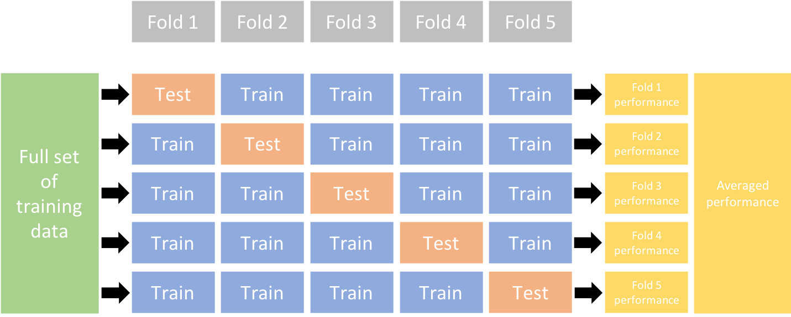
Figure source: Reference [4].In scikit-learn, the function cross_validate allows us to perform cross-validation, and we need to pass to it the model, the data, the target, and the number of folds with cv.
In practice, it is most common to use k=5 or k=10.
from sklearn.model_selection import cross_validate
rf_model = RandomForestClassifier(n_estimators=56, max_depth=9, min_samples_leaf=3, random_state=123)
cv_result = cross_validate(rf_model, X_train, y_train, cv=5)
cv_result{'fit_time': array([0.15049887, 0.14710426, 0.1436522 , 0.14878869, 0.14645934]),
'score_time': array([0.00786376, 0.00651002, 0.00665116, 0.00735497, 0.00675845]),
'test_score': array([0.86956522, 1. , 0.86363636, 0.95454545, 1. ])}The output of cross_validate is a Python dictionary (named cv_rsults in our case), which by default contains three entries:
fit_time: the time to train the model on the training data for each fold.score_time: the time to predict with the model on the testing data for each fold.test_score: the score (such as accuracy) on the testing data for each fold.
In the next cell, we displayed the mean and standard deviation of the accuracy for the five folds, by using the values for the 'test_score' key in the resulting dictionary.
scores = cv_result["test_score"]
print("The mean cross-validation accuracy is: "
f"{scores.mean():.3f} +/- {scores.std():.3f}")The mean cross-validation accuracy is: 0.938 +/- 0.060And optionally, we can manually perform k-fold cross-validation by using a for-loop and feed the folds for training and testing. In the code below train_index and test_index are the indices of the elements in each fold.
from sklearn.model_selection import StratifiedKFold
kfold = StratifiedKFold(n_splits=5).split(X_train, y_train)
scores = []
for k, (train_index, test_index) in enumerate(kfold):
rf_model.fit(X_train[train_index], y_train[train_index])
accuracy_score = rf_model.score(X_train[test_index], y_train[test_index])
scores.append(accuracy_score)
print('Fold: %2d, Class dist.: %s, Acc: %.3f' % (k+1,
np.bincount(y_train[train_index]), accuracy_score))
print('\nCV accuracy: %.3f +/- %.3f' % (np.mean(scores), np.std(scores)))Fold: 1, Class dist.: [30 30 29], Acc: 0.870
Fold: 2, Class dist.: [30 30 29], Acc: 1.000
Fold: 3, Class dist.: [30 30 30], Acc: 0.864
Fold: 4, Class dist.: [31 29 30], Acc: 0.955
Fold: 5, Class dist.: [31 29 30], Acc: 1.000
CV accuracy: 0.938 +/- 0.060For instance, the following code displays the train and text indices for the first fold. I.e, indices 0 to 22 are used for testing, and indices 23 to 111 are used for training.
kfold = StratifiedKFold(n_splits=5, shuffle=False).split(X_train, y_train)
for train_index, test_index in kfold:
print("TRAIN indices:", train_index, "\n", "TEST indices:", test_index)
breakTRAIN indices: [ 23 24 25 26 27 28 29 30 31 32 33 34 35 36 37 38 39 40
41 42 43 44 45 46 47 48 49 50 51 52 53 54 55 56 57 58
59 60 61 62 63 64 65 66 67 68 69 70 71 72 73 74 75 76
77 78 79 80 81 82 83 84 85 86 87 88 89 90 91 92 93 94
95 96 97 98 99 100 101 102 103 104 105 106 107 108 109 110 111]
TEST indices: [ 0 1 2 3 4 5 6 7 8 9 10 11 12 13 14 15 16 17 18 19 20 21 22]10.7 Performance Metrics
In the above examples, we worked only with accuracy as a performance metric, but other metrics are also frequently used with prediction models.
We will use the breast cancer dataset to explain the metrics. The dataset consists of diagnoses for 569 patients, and includes 30 features for each patient, which are shown below. The targets are the benign or malignant class, shown in the column target to the right.
import pandas as pd
from sklearn.datasets import load_breast_cancer
bc = load_breast_cancer()
df = pd.DataFrame(data=bc.data, columns=bc.feature_names)
df["target"] = bc.target
df.head()| mean radius | mean texture | mean perimeter | mean area | mean smoothness | mean compactness | mean concavity | mean concave points | mean symmetry | mean fractal dimension | ... | worst texture | worst perimeter | worst area | worst smoothness | worst compactness | worst concavity | worst concave points | worst symmetry | worst fractal dimension | target | |
|---|---|---|---|---|---|---|---|---|---|---|---|---|---|---|---|---|---|---|---|---|---|
| 0 | 17.99 | 10.38 | 122.80 | 1001.0 | 0.11840 | 0.27760 | 0.3001 | 0.14710 | 0.2419 | 0.07871 | ... | 17.33 | 184.60 | 2019.0 | 0.1622 | 0.6656 | 0.7119 | 0.2654 | 0.4601 | 0.11890 | 0 |
| 1 | 20.57 | 17.77 | 132.90 | 1326.0 | 0.08474 | 0.07864 | 0.0869 | 0.07017 | 0.1812 | 0.05667 | ... | 23.41 | 158.80 | 1956.0 | 0.1238 | 0.1866 | 0.2416 | 0.1860 | 0.2750 | 0.08902 | 0 |
| 2 | 19.69 | 21.25 | 130.00 | 1203.0 | 0.10960 | 0.15990 | 0.1974 | 0.12790 | 0.2069 | 0.05999 | ... | 25.53 | 152.50 | 1709.0 | 0.1444 | 0.4245 | 0.4504 | 0.2430 | 0.3613 | 0.08758 | 0 |
| 3 | 11.42 | 20.38 | 77.58 | 386.1 | 0.14250 | 0.28390 | 0.2414 | 0.10520 | 0.2597 | 0.09744 | ... | 26.50 | 98.87 | 567.7 | 0.2098 | 0.8663 | 0.6869 | 0.2575 | 0.6638 | 0.17300 | 0 |
| 4 | 20.29 | 14.34 | 135.10 | 1297.0 | 0.10030 | 0.13280 | 0.1980 | 0.10430 | 0.1809 | 0.05883 | ... | 16.67 | 152.20 | 1575.0 | 0.1374 | 0.2050 | 0.4000 | 0.1625 | 0.2364 | 0.07678 | 0 |
5 rows × 31 columns
df.info()<class 'pandas.core.frame.DataFrame'>
RangeIndex: 569 entries, 0 to 568
Data columns (total 31 columns):
# Column Non-Null Count Dtype
--- ------ -------------- -----
0 mean radius 569 non-null float64
1 mean texture 569 non-null float64
2 mean perimeter 569 non-null float64
3 mean area 569 non-null float64
4 mean smoothness 569 non-null float64
5 mean compactness 569 non-null float64
6 mean concavity 569 non-null float64
7 mean concave points 569 non-null float64
8 mean symmetry 569 non-null float64
9 mean fractal dimension 569 non-null float64
10 radius error 569 non-null float64
11 texture error 569 non-null float64
12 perimeter error 569 non-null float64
13 area error 569 non-null float64
14 smoothness error 569 non-null float64
15 compactness error 569 non-null float64
16 concavity error 569 non-null float64
17 concave points error 569 non-null float64
18 symmetry error 569 non-null float64
19 fractal dimension error 569 non-null float64
20 worst radius 569 non-null float64
21 worst texture 569 non-null float64
22 worst perimeter 569 non-null float64
23 worst area 569 non-null float64
24 worst smoothness 569 non-null float64
25 worst compactness 569 non-null float64
26 worst concavity 569 non-null float64
27 worst concave points 569 non-null float64
28 worst symmetry 569 non-null float64
29 worst fractal dimension 569 non-null float64
30 target 569 non-null int64
dtypes: float64(30), int64(1)
memory usage: 137.9 KBdf['target'].value_counts()target
1 357
0 212
Name: count, dtype: int64There are 357 patients with malignant tumors, and 212 patients with benign tumors. Let’s create train and test datasets.
X = df.drop('target', axis=1)
y = df['target']
X_train, X_test, y_train, y_test = train_test_split(X, y, test_size=0.3, random_state=0, stratify=y)print('Training data inputs', X_train.shape)
print('Training labels', y_train.shape)
print('Testing data inputs', X_test.shape)
print('Testing labels', y_test.shape)Training data inputs (398, 30)
Training labels (398,)
Testing data inputs (171, 30)
Testing labels (171,)A Logistic Regression model achieved 93.57% accuracy.
lr_model = LogisticRegression()
# fit model
lr_model.fit(X_train, y_train)
# accuracy
lr_model.score(X_test, y_test)0.935672514619883from sklearn.metrics import confusion_matrix
y_pred = lr_model.predict(X_test)
confmat = confusion_matrix(y_test, y_pred, labels=[1, 0])
print(confmat)[[101 6]
[ 5 59]]The confusion matrix can be interpreted as the values of positives and negatives, if there are only two classes (binary classification). For the case of breast cancer they mean:
- True Positive (TP): Predicted malignant, actually malignant (positive). There are 101 TP samples in this case.
- True Negative (TN): Predicted benign, actually benign (negative). There are 59 TN samples in this case.
- False Negative (FN): Predicted benign, actually malignant (positive). There are 6 FN samples in this case.
- False Positive (FP): Predicted malignant, actually benign (negative). There are 5 FP samples in this case.
Obviously, correctly guessing TP and TN is the goal. Other than that, FN is the worst case, because it means that a malignant tumor is missed. FP is also bad, because it will require to perform biopsy and will put stress on the patient, but the outcome is still preferred.
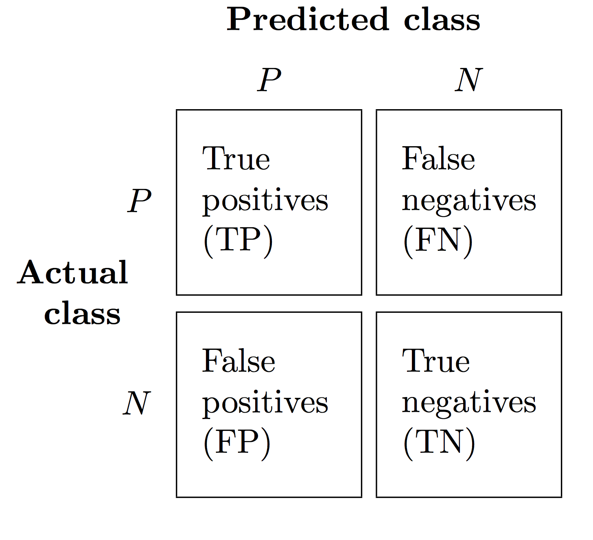
Figure source: Reference [2].The following performance metrics are commonly used.
Accuracy = \((TP+TN)/(TP+FN+TN+FP)\), or it is the fraction of correct predictions by the model among all available samples. In this case it is \((101+59)/(101+6+5+59) = 160/171 = 0.9357\).
Precision = \(TP/(TP+FP)\), or it is the fraction of correct positive predictions by the model among all positive predictions by the model. In this case it is \(101/(101+5) = 101/106 = 0.9528\). Or, you can think of precision as, from all patients that the model predicted to have malignant tumors, how many patients have malignant tumors.
Recall = \(TP/(TP+FN)\), or it is the fraction of all positive predictions by the model from all positive samples in the data. In this case it is \(101/(101+6) = 101/107 = 0.9439\). Or, you can think of recall as, from all patients that have malignant tumors, how many patients the model predicted that have malignant tumors. In binary classification, recall is also called sensitivity or true positive rate.
Specificity = \(TN/(TN+FP)\), or it is the fraction of all negative predictions by the model from all negative samples in the data. In this case it is \(59/(59+5) = 59/64 = 0.9219\). Or, you can think of specificity as, from all patients that have benign tumors, how many patients the model predicted that have benign tumors. Specificity is also called true negative rate.
F1 score = \((2 * precision * recall)/(precision + recall)\), is a measure which combines the precision and recall, and it is also called harmonic mean of precision and recall. F1 score is considered as a more suitable metric than accuracy in cases when the dataset is unbalanced, that is, there are more samples from one class than the other class (or classes).
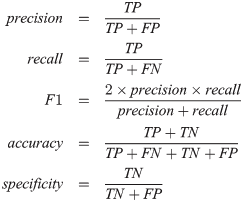
The following two figures provide a graphical representation of confusion matrix, precision, and recall, which can be helpful for understanding the meaning of these performance metrics.
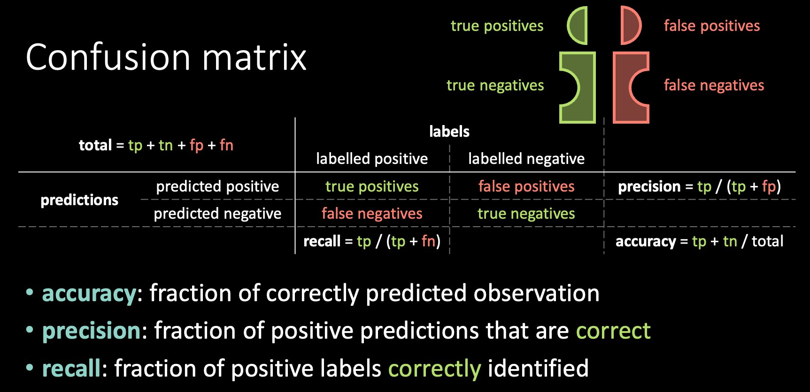
Figure: Confusion matrix.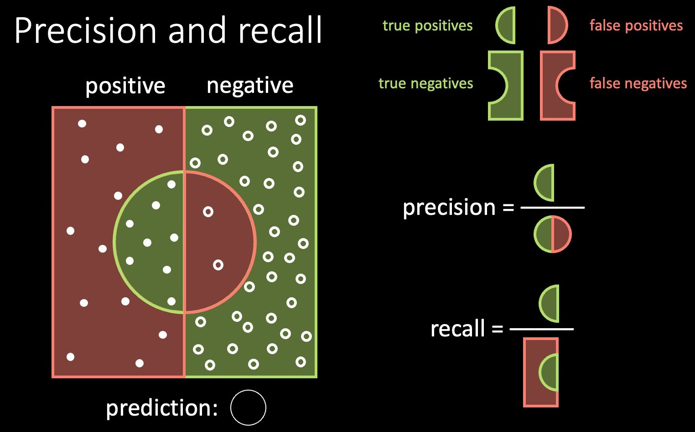
Figure: Precision and recall metrics.In scikit-learn, we can obtain the individual metrics as follows.
from sklearn import metrics
print(metrics.precision_score(y_test, y_pred))
print(metrics.recall_score(y_test, y_pred))
print(metrics.f1_score(y_test, y_pred))0.9528301886792453
0.9439252336448598
0.9483568075117371Also, the function classification_report prints the precision, recall, f1-score, and accuracy for all classes. The reported averages include macro average accuracy (averaging the accuracy per each class), and weighted average (averaging the accuracy by using weights for each class based on the proportions of samples in each class). The support column shows the number of samples, i.e., from the 171 samples in the test dataset, there are 64 benign and 107 malignant cases.
# multiple metrics at once
print(metrics.classification_report(y_test, y_pred)) precision recall f1-score support
0 0.91 0.92 0.91 64
1 0.95 0.94 0.95 107
accuracy 0.94 171
macro avg 0.93 0.93 0.93 171
weighted avg 0.94 0.94 0.94 171
And one more commonly used metric in binary classification is Receiver Operating Characteristic (ROC). ROC curves are created by plotting the False Positive Rate (= \(FP/(FP + TN)\)) on the x-axis and True Positive Rate (= \(TP/(TP+FN)\), or sensitivity, recall) on the y-axis. The curve summarizes the trade-off between the True Positive Rate and False Positive Rate of the model using different probability thresholds.
So far, we only used a threshold of 0.5, where predictions greater or equal to it are assigned the class label 1, and predictions smaller than 0.5 are assigned the class label 0. In binary classification, using different thresholds for the probability in predicting the class label of a data point changes the True Positive Rate and False Positive Rate. By changing the threshold value from 0 to 1 we can obtain many different points with True Positive Rate and False Positive Rate, and by connecting the different points we can plot the ROC curve. The curve allows to better interpret the results of the classifier.
In a ROC curve, the top left corner of the plot is the ideal point - with a False Positive Rate of 0, and a True Positive Rate of 1. In general, a higher x-value indicates high False Positive Rate (\(FP/(FP + TN)\)), that is, higher number of False Positives than True Negatives. This means that the model is classifying significant proportion of actual negatives as positives. Conversely, lower x-value indicates low False Positive Rate, meaning that the model achieves low number of False Positives and high number of True Negatives. Similarly, a higher y-value indicates high True Positive Rate (\(TP/(TP+FN)\)), that is, higher number of True Positives than False Negatives.
The plot below shows the ROC curve for the Logistic Regression model. It also shows a line for a model that makes random predictions. The further the curve from the line with random prediction, the better the model predictions are.
# output probabilities for each sample
y_pred_probabilities = lr_model.predict_proba(X_test)from sklearn.metrics import roc_curve
# output probabilities for each sample
output_probabilities = lr_model.predict_proba(X_test)
# probabilities for the positive class
y_pred_probabilities = output_probabilities[:,1]
# calculate FPR and TRP
fpr, tpr, _ = roc_curve(y_test, y_pred_probabilities)
# roc curve for tpr = fpr
random_probs = [0 for i in range(len(y_test))]
p_fpr, p_tpr, _ = roc_curve(y_test, random_probs)
plt.plot(fpr, tpr, linestyle='--', color='orange', label='Logistic Regression')
plt.plot(p_fpr, p_tpr, linestyle='--', color='blue', label='Random Prediction')
plt.title('ROC curve')
plt.xlabel('False Positive Rate')
plt.ylabel('True Positive rate')
plt.legend(loc='best')
plt.show()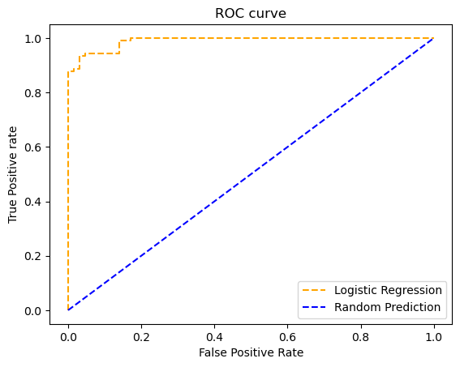
The Area Under the Curve (AUC) of ROC (AUC-ROC) is the measure of the ability of a classifier to distinguish between classes and is used as a summary of the ROC curve. The higher the AUC, the better the performance of the model at distinguishing between the positive and negative classes. When AUC = 1, the classifier is able to perfectly predict the classes. When AUC = 0.5, the classifier is making random predictions of the class for the data points.
In scikit-learn, AUC-ROC is calculated using the auc_roc_score.
metrics.roc_auc_score(y_test, y_pred_probabilities)0.989778037383177610.8 Model Pipelines
We can combine sequential operations with a scikit-learn Pipeline, which chains together operations. The helper function make_pipeline is used to create a Pipeline, and takes as arguments the successive transformations to perform, followed by the classifier or regressor model.
Let’s create one pipeline consisting of a Standard Scaler function and a Logistic Regression classifier, and another pipeline consisting of a MinMax Scaler function and a Random Forest classifier.
from sklearn.pipeline import make_pipeline
from sklearn.preprocessing import StandardScaler, MinMaxScaler
pipeline_ss_lr = make_pipeline(StandardScaler(), LogisticRegression())
pipeline_ns_rf = make_pipeline(MinMaxScaler(), RandomForestClassifier())Apply the first pipeline to perform data scaling via standardization and afterward fit the Logistic Regression model to the data.
# apply the pipeline
pipeline_ss_lr.fit(X_train, y_train)
# score on the test data
accuracy = pipeline_ss_lr.score(X_test, y_test)
print('The test accuracy of Logistic Regression is {0:5.2f} %'.format(accuracy*100))The test accuracy of Logistic Regression is 95.91 %Apply the second pipeline to perform data scaling via normalization and afterward fit the Random Forest model to the data.
# apply the pipeline
pipeline_ns_rf.fit(X_train, y_train)
# score on the test data
accuracy = pipeline_ns_rf.score(X_test, y_test)
print('The test accuracy of Random Forests is {0:5.2f} %'.format(accuracy*100))The test accuracy of Random Forests is 93.57 %10.9 Flow Chart: How to Choose an Estimator
This is a flow chart created by the scikit-learn contributor Andreas Mueller that gives a nice summary of which algorithms to choose in various situations.

10.9.1 Recap: Scikit-learn’s Estimator Interface
Scikit-learn strives to have a uniform interface across all methods, as we saw in the examples. Given a scikit-learn estimator object named model, the following methods are available:
- Available in all estimators
model.fit(): fit training data. For supervised learning applications, this accepts two arguments: the dataXand the labelsy(e.g.model.fit(X, y)). For unsupervised learning applications, this accepts only a single argument, the dataX(e.g.model.fit(X)).
- Available in supervised estimators
model.predict(): given a trained model, predict the label of a new set of data. This method accepts one argument, the new dataX_new(e.g.model.predict(X_new)), and returns the learned label for each item in the array.model.predict_proba(): For classification tasks, some estimators also provide this method, which returns the probability that a new sample has for each category. In this case, the label with the highest probability is returned bymodel.predict().model.score(): for classification or regression tasks, most estimators implement a score method. Scores are between 0 and 1, with a larger score indicating a better fit.
- Available in unsupervised estimators
model.predict(): predict labels in clustering algorithms.model.transform(): given an unsupervised model, transform new data into a new basis. This also accepts one argumentX_new, and returns the new representation of the data based on the unsupervised model.model.fit_transform(): some estimators implement this method, which more efficiently performs a fit and a transform on the same input data.
Appendix: Optical Character Recognition
The material in the Appendix is not required for quizzes and assignments.
To demonstrate the above principles on a more interesting problem, let’s consider OCR (Optical Character Recognition) – that is, recognizing hand-written digits. Here, we will use scikit-learn’s set of pre-formatted digits, which can be loaded directly with load_digits().
Loading and visualizing the digits data
We’ll use scikit-learn’s data access interface and take a look at this data:
from sklearn import datasets
digits = datasets.load_digits()
digits.images.shape(1797, 8, 8)Let’s plot a few images and show the ground-truth label in the lower left corner.
import numpy as np
import matplotlib.pyplot as plt
fig, axes = plt.subplots(10, 10, figsize=(8, 8))
fig.subplots_adjust(hspace=0.1, wspace=0.1)
for i, ax in enumerate(axes.flat):
ax.imshow(digits.images[i], cmap='binary')
ax.text(0.05, 0.05, str(digits.target[i]),
transform=ax.transAxes, color='green')
ax.set_xticks([])
ax.set_yticks([])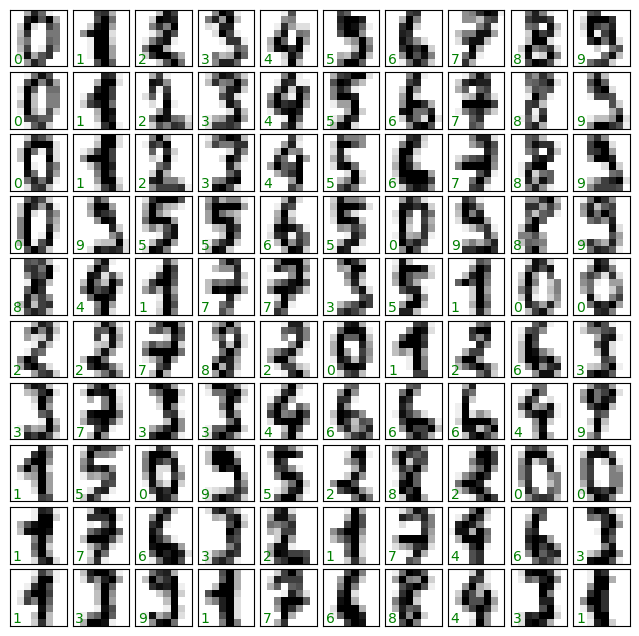
The images are just 8x8 pixels.
# The images themselves
print(digits.images.shape)
print(digits.images[0])(1797, 8, 8)
[[ 0. 0. 5. 13. 9. 1. 0. 0.]
[ 0. 0. 13. 15. 10. 15. 5. 0.]
[ 0. 3. 15. 2. 0. 11. 8. 0.]
[ 0. 4. 12. 0. 0. 8. 8. 0.]
[ 0. 5. 8. 0. 0. 9. 8. 0.]
[ 0. 4. 11. 0. 1. 12. 7. 0.]
[ 0. 2. 14. 5. 10. 12. 0. 0.]
[ 0. 0. 6. 13. 10. 0. 0. 0.]]Because scikit-learn uses two-dimensional inputs, the images have been reshaped from 8x8 pixels into one long vector of 64 elements.
# The data for use in our algorithms
print(digits.data.shape)
print(digits.data[0])(1797, 64)
[ 0. 0. 5. 13. 9. 1. 0. 0. 0. 0. 13. 15. 10. 15. 5. 0. 0. 3.
15. 2. 0. 11. 8. 0. 0. 4. 12. 0. 0. 8. 8. 0. 0. 5. 8. 0.
0. 9. 8. 0. 0. 4. 11. 0. 1. 12. 7. 0. 0. 2. 14. 5. 10. 12.
0. 0. 0. 0. 6. 13. 10. 0. 0. 0.]# The target label
print(digits.target)[0 1 2 ... 8 9 8]The data have 1797 samples having 64 dimensions (features).
Classification on Digits
Let’s first split the digits into a training and testing sample.
Xtrain, Xtest, ytrain, ytest = train_test_split(digits.data, digits.target, random_state=2)
print(Xtrain.shape, Xtest.shape)(1347, 64) (450, 64)And, we will use a simple Logistic Regression as a classification algorithm.
from sklearn.linear_model import LogisticRegression
clf = LogisticRegression(penalty='l2')
clf.fit(Xtrain, ytrain)
ypred = clf.predict(Xtest)from sklearn.metrics import accuracy_score
accuracy_score(ytest, ypred)0.9466666666666667from sklearn.metrics import confusion_matrix
print(confusion_matrix(ytest, ypred))[[41 0 0 0 1 0 0 0 0 0]
[ 0 46 0 1 0 0 0 0 2 1]
[ 0 0 47 0 0 0 0 0 0 0]
[ 0 0 0 44 0 1 0 1 2 0]
[ 0 0 0 0 36 0 0 0 3 1]
[ 0 1 0 0 1 50 0 0 0 0]
[ 0 1 0 0 0 0 41 0 1 0]
[ 0 0 0 0 0 0 0 48 1 0]
[ 0 0 0 0 0 0 0 0 39 1]
[ 0 0 0 2 0 1 0 0 2 34]]We can plot the confusion matrix as an image.
plt.imshow(np.log(confusion_matrix(ytest, ypred)),
cmap='Blues', interpolation='nearest')
plt.grid(False)
plt.ylabel('true')
plt.xlabel('predicted');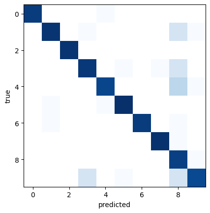
We can also look at some of the images along with their predicted labels. The incorrect labels are in red color.
fig, axes = plt.subplots(10, 10, figsize=(8, 8))
fig.subplots_adjust(hspace=0.1, wspace=0.1)
for i, ax in enumerate(axes.flat):
ax.imshow(Xtest[i].reshape(8, 8), cmap='binary')
ax.text(0.05, 0.05, str(ypred[i]),
transform=ax.transAxes,
color='green' if (ytest[i] == ypred[i]) else 'red')
ax.set_xticks([])
ax.set_yticks([])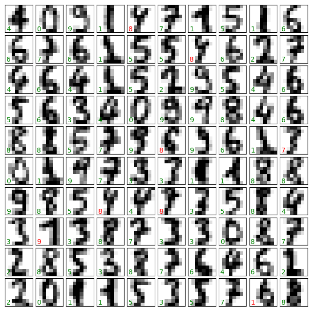
In fact, some of the mislabeled cases with this simple logistic regression algorithm are difficult to classify even for us.
References
- PyCon 2015 Sckikit-Learn Tutorial, Jake VanderPlas available at: https://github.com/jakevdp/sklearn_pycon2015.
- Python Machine Learning (2nd Ed.) Code Repository, Sebastian Raschka, available at: https://github.com/rasbt/python-machine-learning-book-2nd-edition.
- Complete Machine Learning Package, Jean de Dieu Nyandwi, available at: https://github.com/Nyandwi/machine_learning_complete.
- Advanced Python for Data Science, University of Cincinnati, available at: https://github.com/uc-python/advanced-python-datasci.
- Scikit-Learn: Machine Learning Concepts, available at: https://inria.github.io/scikit-learn-mooc/toc.html.